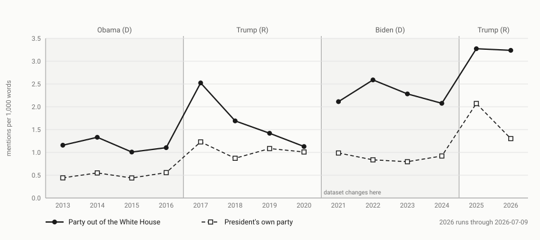

Who Says the President's Name
In 14 years of congressional press releases, the party out of the White House named the sitting president more often than his own party did. Every year, under both parties. We counted names. We did not measure tone.
By Michael King · 2026-11-25
- correlation-not-cause A measured association. No causal claim is made.
- mention-not-hostility Counts how often a name appears. It does not measure tone or intent.
- symmetric-instrument Both parties passed through the same pipeline and thresholds.
One might expect a party to avoid saying the other side's president's name. We checked that against 14 years of member press releases from Congress. It runs the other way. In every year from 2013 to 2026, the party out of the White House named the sitting president more often, per word, than the president's own party did. It held under Obama, Trump, Biden, and Trump again.
This piece counts names. It does not measure tone. A president's name in a press release can sit inside a complaint, a request, a thank-you, or a line about a bill signing. We did not sort them, and nothing here says either side was more hostile than the other. The piece is published under that label: mention is not hostility.
The finding, stated exactly
For each year we took every press release in our corpus from a Democratic or Republican member and counted the sitting president's surname as a whole word: Obama in 2013 to 2016, Trump in 2017 to 2020, Biden in 2021 to 2024, Trump in 2025 and 2026. The sitting president is whoever held office on July 1 of that year. We divided each party's count by the words that party published that year, so the measure is mentions per 1,000 words. It is a rate, so the party that publishes more does not win by volume. The series covers 640,404 releases and 286,882,666 words, from January 2013 through July 9, 2026.
The out-party's rate was higher in 14 of 14 years. Dividing the out-party's rate by the in-party's gives a ratio for each year. It ran from 1.12 in 2020 to 3.09 in 2022, and the median year was 2.20.
Some single years, one per presidency. In 2013, Republican releases named Obama 1.16 times per 1,000 words (17,135 releases) and Democratic releases 0.44 times (19,029). In 2017, Democratic releases named Trump 2.52 times (38,543) and Republican releases 1.23 (35,456). In 2022, Republican releases named Biden 2.59 times (8,410) and Democratic releases 0.84 (11,151). In 2025, Democratic releases named Trump 3.27 times (28,041) and Republican releases 2.07 (20,337).
The side doing more of the naming changed each time the White House did, in 2017, 2021, and 2025. The president's own party names him too, and in some years often. It names him less.

White House or Congress
Our first essay left the question of power position open. So we asked it here. Is this about being out of the White House, or about being out of power in Congress? The two can be separated because they did not always line up.
In 8 of the 14 years, the party out of the White House held the House majority: Republicans in 2013 to 2016 and in 2023 and 2024, Democrats in 2019 and 2020. The out-party named the president more in all 8. In the other 6 years it held neither chamber, and it named him more in all 6. Control of Congress did not change the direction. The size of the gap varied. The two closest years, 2020 at 1.12 and 2019 at 1.31, were Democratic-House years under Trump, but the Republican-House years under Biden, 2023 at 2.87 and 2024 at 2.26, were not close. With four presidencies we cannot say what moves the size of the gap.
Checked inside each dataset
Our corpus is two datasets joined at January 3, 2021: an older import that ends there and our own collector, which carries everything after. A comparison across that line compares two instruments. So we checked this finding inside each dataset on its own, on halves fixed before the re-check ran: 2013 to 2016 against 2017 to 2020 in the older one, 2021 to 2023 against 2024 to 2026 in ours. The out-party named the president more in every year of all four halves. The finding holds in each dataset on its own. Every year in the series is measured in the dataset that carries it.
What this does not show
It does not show why. Answering an executive order, asking an agency for money, and arguing with a policy all produce the same count. The result is a correlation between holding the White House and how often a party's releases use the president's name. It is not a claim about motive or tone.
It does not show that this holds everywhere members speak. We ran the same measure on the Extensions of Remarks section of the Congressional Record, where members insert written statements: 68,524 from Democratic and Republican members over the same 14 years. There the out-party named the president more in 8 of 14 years: 6 of 8 from 2013 to 2020, and 2 of 6 from 2021 to 2026. From 2021 on, the president's own party named him as much or more in 4 of 6 years. The two genres disagree. We treat this finding as a fact about press releases. We have not measured why the two genres differ.
The count has limits. We count the surname as a standalone word. That catches anyone else who shares it, such as a president's relatives, and it counts possessives like "Obama's" only when the apostrophe is curly, which varies from release to release. The rule is identical for both parties in every year. We measured the possessive gap: counting straight-apostrophe possessives as well (37,355 of them, beside 407,007 counted mentions) leaves the out-party higher in 14 of 14 years, with ratios from 1.11 to 3.01. The counted releases also include 46,751 pages whose addresses mark them as news articles reposted on member sites or as archive captures. Without them the out-party is still higher in 14 of 14 years, with ratios from 1.12 to 3.09. 2026 is a partial year, through July 9. Our own collector also holds a thin archive from before 2021, between 673 and 9,247 releases a year. We keep it out of the series because the older dataset already covers those years and mixing the two is the error described above. Read alone, that archive agrees in 7 of its 8 years. In 2020 it goes the other way.
The receipts
The rate is an aggregate. Below are three releases per presidency from members of the party out of the White House, each naming the sitting president: six Republican, six Democratic. They were drawn by a fixed rule, not picked. We sorted every qualifying release by a hash of its URL and took the first three from different members whose links still load. Before the final draw we wrote down one more rule: a receipt must be the office's own page, so reposted news articles and archive captures were skipped. We did not read them for tone before the draw, and we did not change it after. Some link addresses read as pointed; we left the draw as it fell. They show the name appearing and nothing more. The same draw from the president's own party would show his name as well, at a lower rate.
One might expect a party to go quiet about the other side's president. In press releases, the out-party says his name more than his own party does, in every year we have, and the side doing it switches when the White House changes hands. That is a count. It is all we claim.
Provenance
- estimator
- sitting-president surname as a whole word ([a-z']+ tokens, lowercased) per 1,000 words, out-party versus in-party, per year; sitting president = term covering July 1; in-party = chambers-control potus for the year's modal congress; releases of 20+ words from D and R members
- finding card
- data/derived/findings/S2.9.json (CONFIRMED, twice-confirmed)
- ledger
- docs/13 search ledger, S2.9 (L124) and the within-lane re-validation row (L581); SD.8 for the Congressional Record check
- receipts method
- out-party releases in the year's home lane containing the sitting president's surname; sha256('p2-boogeyman|'+url) order; first 3 distinct members per presidency with a live link (HTTP 200, non-root path), skipping URLs containing in-the-news, news-coverage, in-the-media or web.archive.org (rule written before the redraw); member names via pipeline.site.member_name; tone never read; draw scripts archived with the draft assets
- rerun, Congressional Record check
- python scripts/deep/sd8_concordance.py
- rerun, finding
- python scripts/search/revalidate_s1_9_s2_9.py
- window
- 2013-01-03 to 2026-07-09, congresses 113-119; propublica lane 2013-2020, scraped lane 2021-2026; 640,404 releases, 286,882,666 words
Every number in this piece comes from the published record and can be recomputed from the sources it cites.